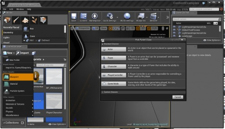
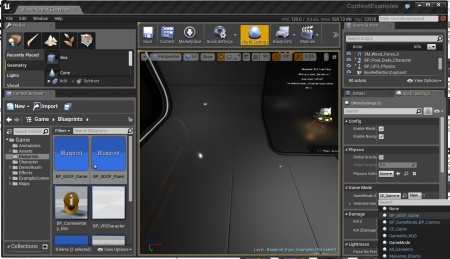
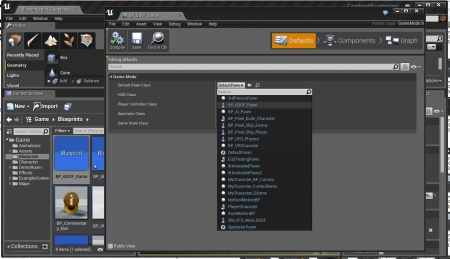
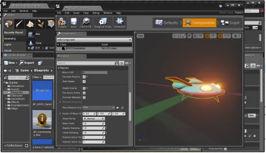
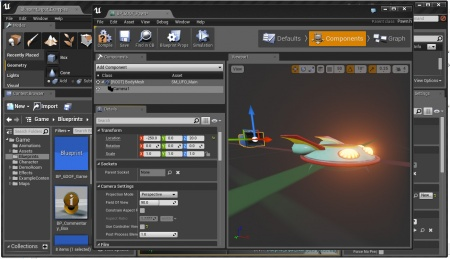
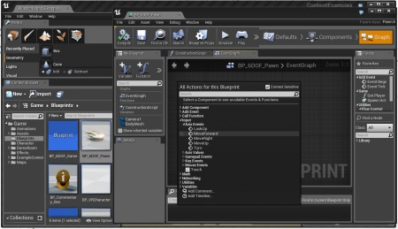
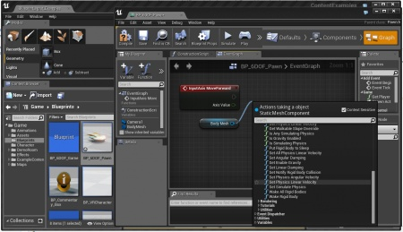
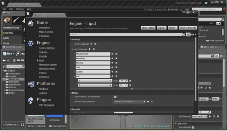

Blueprint Six-DOF Flying Pawn Tutorial
Skill Level : Beginner
Engine Version : 4.0.1
Getting a 6-DOF flying pawn like in
Descent
is fiarly simple in UE4 using only Blueprints.
Note: If you're starting in a blank project, be sure to set up your I'll be using the Content Examples project as it provides me with a place to fly around in and some simple assets to start with as well as the standard WASD axis bindings.
Contents
Setting up the Game Mode and Pawn
-
Create a new
Pawn Blueprint
by selecting
New
in the Content Browser. Select
Pawn
from the
Pick Parent Class
window. Name this
BP_6DOF_Pawn
.

- Next, create a Game Mode Blueprint in the same manner, this time selecting Game Mode from the Pick Parent Class window. Name this BP_6DOF_Game .
-
Now, you'll want to assign
BP_6DOF_Game
to the map so that you are in possession of your new Pawn when the game starts. Click on the
World Settings
button in the editor toolbar. This will open a tab with the map's properties. You will find a drop-down menu under
Game Mode
that will display your newly created Game Mode (
BP_6DOF_Game
).

-
Assign
BP_6DOF_Pawn
to the
Game Mode Blueprint
by opening
BP_6DOF_Game
and clicking on the
Defaults
tab and assigning your new
BP_6DOF_Pawn
class with the
Default Pawn Class
dropdown.

Close the Game Mode Blueprint Editor and save your work ( File > Save All or Ctrl+S)
Building the Pawn
- Open BP_6DOF_Pawn and click on the Components tab
- Add a Static Mesh Component by using the Add Component dropdown.
- Name it BodyMesh
- Assign your desired Static Mesh asset to the component. I've chosen the provided UFO as it fits this example very well. An important thing to note is that the Static Mesh Component will require valid collision to work properly!
-
In the Details panel, scroll down to the
Physics
section and do the following:
- Enable Simulate Physics
- Disable Enable Gravity
- Set Angular Damping to 1.0
-
Set
Linear Damping
to 1.0

- In the Components panel, add a new Camera Component from the dropdown. This will parent it to the BodyMesh , inheriting the movement and rotation.
- In the Details panel, or using the transform gizmo in the Blueprint Editor viewport, set the position of the Camera behind the MeshBody .
-
Also, disable
Use Controller Rotation
as we want to follow the rotation of our Pawn, not the controller (Which tends to keep a horizontal view).

At this point, you should save your work! If you play the level (Alt-P), you should see your Pawn in front of you, but won't be able to move at all. Next, we'll get some input events and get the Pawn moving around!
Input Part 1: WASD Movement
- Open the BP_6DOF_Pawn editor from the Content Browser by double-clicking the icon.
- Go to the Graph tab and ensure you are in the Event Graph (not the Construction Script ).
-
Right-Click in the graph area and find the
Move Forward Axis
Event
(not the Axis Value function).

- Add a reference to the BodyMesh by dragging it from the variables list on the left into the graph and selecting Get from the menu.
-
Drag a wire from the right side of the reference of BodyMesh, releasing the mouse in the Event Graph and find
Set Physics Linear Velocity
function.

- Connect the Move Forward Axis Event to the Set Physics Linear Velocity function.
- Drag a wire from the Axis Value node on Move Forward Axis Event , releasing on the Event Graph and select Float * Float
- Set the second number of the Float * Float to 30.0 to give our ship some thrust.
-
Now, we need to add that thrust to the local X or Forward vector of our Pawn. UE4 offers a simple method for this via the
Get Forward Vector
function.
- Right-click on the Event Graph and create a Get Actor Rotation function. This returns the world rotation of the Pawn.
- Drag a wire from this and create a Get Forward Vector function.
- Multiply the Get Forward Vector return value by the multiplied Axis Value using a Vector * Float function.
- Send this into the New Vel node of the Set Physics Linear Velocity function.
- Be sure to set the Add to Current bool flag on the Set Physics Linear Velocity function to TRUE.
Your Graph should look like this:
Do the same for the for the MoveRight Axis Event , using the Get Right Vector function. Your graph should look like this:
Save your work and give it a test! You should be able to move forwards and back using the W and S keys and left and right using the A and D keys (Or, even controller input using the analog sticks!). Crashing into a wall should send you spinning! you'll need to add some steering to be able to get around without crashing.
Input Part 2: Steering
- Right-Click on the Event Graph and find the LookUp Axis Event .
- Drag a wire from the LookUp Axis Event exec node and create an Add Actor Local Rotation function
- Right-Click on the Event Graph and create a Make Rot function.
- Wire the Axis Value from the LookUp Axis Event to the Pitch node of the Make Rot function.
- Wire the Return node of the Make Rot function to the Delta Rotation input on the Add Actor Local Rotation function.
-
Repeat for the
Turn Axis Event
- Rather than the Pitch , wire the Turn Axis Event Axis Value to the Yaw .
Your Event Graph should look like this:
Update
: one additional step that you need to do since UE4 Pawn changed and is now based of "scenerootcomponent", is to mark the mesh as root. To do so, in the components list, drag the
BodyMesh
onto the
Scene root component
to reparent it as root. Steering should now work as expected.
Save your work, close the Blueprint Editor and give it a try by playing (Alt-P).
You should get something like this: YouTube: http://youtu.be/WM5BajSfWzI
Input Part 3: Adding Roll
- Open the Project Settings dialog from the Edit menu.
- Go to Input
- Expand Axis Mappings then click the + symbol next to the words Axis Mappings . This will add a new Axis event and value to your blueprints.
- Name the newly created mapping Roll .
- Expand the Roll rollout and add another input by clicking the + next to the mapping name.
- Select Q for the first dropdown and set the value to -1.0.
-
Select
E
for the second dropdown and set the value to 1.0.

- Close the Project Settings dialog and open the BP_6DOF_Pawn editor.
- Go to the Event Graph and add the Roll Axis Event , connecting it to the Roll input of a Make Rot function.
Your Graph should look like this:
Save your progress and hit Play (Alt-P). Now the Q and E keys should roll your ship!
Good luck! --Tom
Extra Credit: Physics Rotations
I figured this out, but I find that it makes the controls pretty tough to handle, however you might find it instructional on how to apply Angular momentum to the pawn. I won't go into step-by-step detail, but you can follow the attached screenshot: